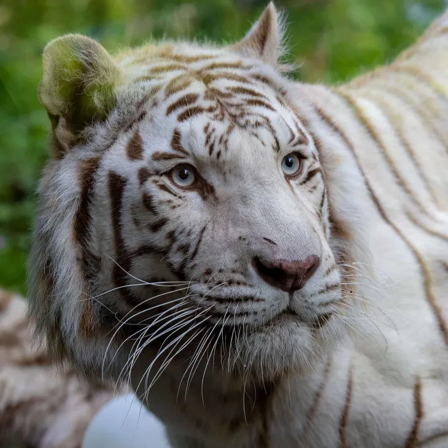
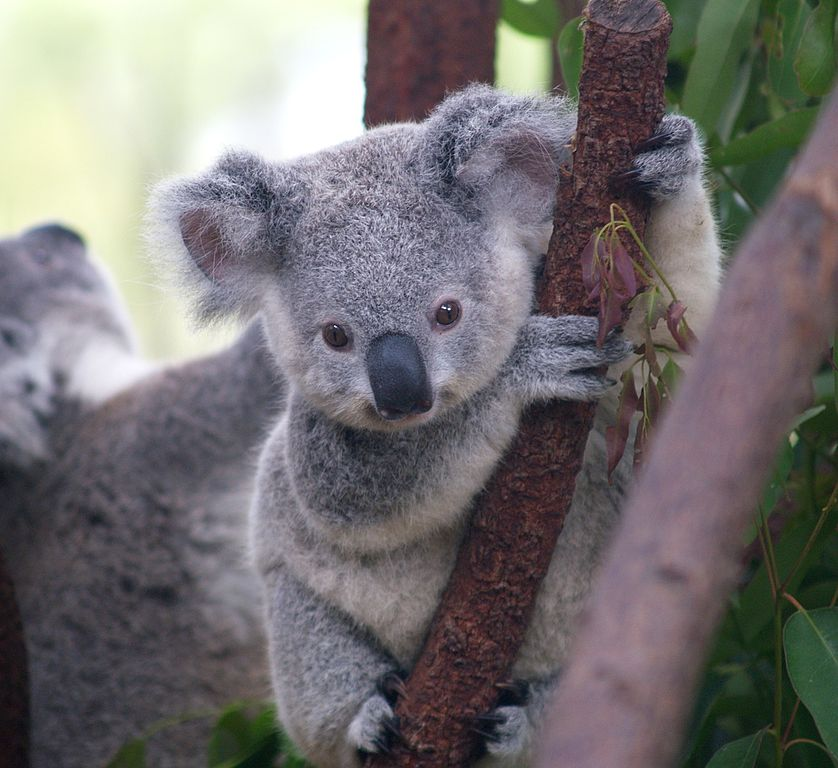
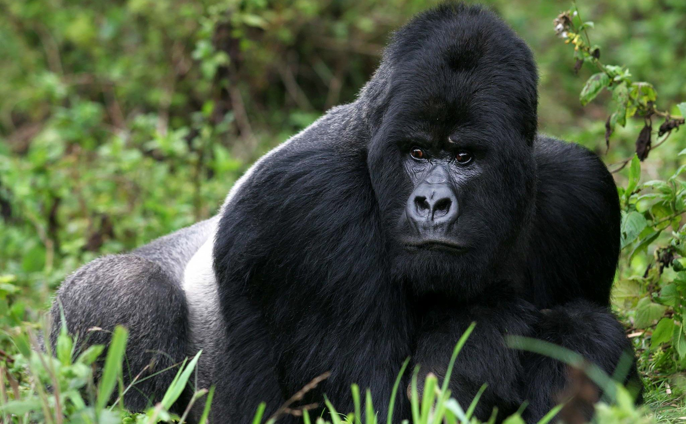

Exotic Mammals
Animals of the category
-

Siberian White Tigers
Siberian white tigers are magnificent carnivorous felines native to Asia. They are known for their creamy white coat and black stripes.
-

Koalas
Koalas are arboreal marsupials native to Australia. They mainly feed on eucalyptus leaves.
-

Mountain Gorillas
Mountain gorillas are the largest terrestrial primates. They inhabit the mountains of central Africa and are critically endangered.